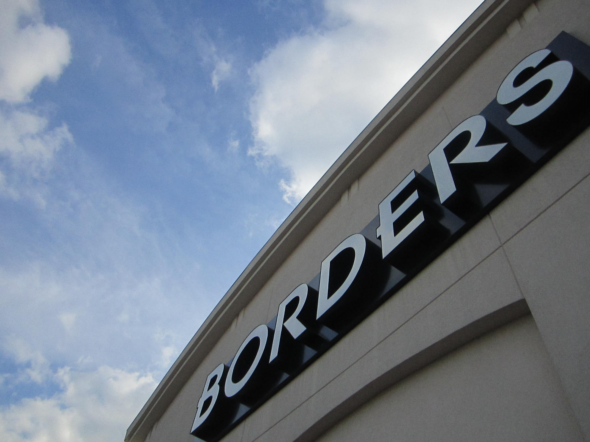

Ramsey Borders opened its doors for business in August of 2001. The store was strategically placed on the Route 17
South in Ramsey, New Jersey, after careful consideration of commuter traffic and demographics in the area. It was
determined that the income and education levels of the residents would be conducive to profitable business.

This was an accurate assumption. For the next ten years, the store was one of the most profitable locations in the state and by the time they closed in 2011, they were still second only to the store in Mays Landing.
But it is hard to write about Ramsey Borders with such a statistical data-oriented tone. Ramsey Borders was more than just its geographical location and the dollars it brought through the registers. You know this, because you probably read the book that this site is all about.
What I didn't even know when I set out to write the book, or even when I finished and published the book, was that Ramsey Borders came into the community in much the same way as it exited. I wasn't until I set out to write the content for this page that I stumbled upon the plans for opening weekend at Ramsey Borders.
On the weekend of August 10, 2001, Ramsey Borders (before it had really earned that name) threw a Grand Opening party with live bands, speakers, a magician, and massage chairs.
Yes, massage chairs.
As you may recall from reading Sold Everywhere But Borders, or perhaps attending the closing event, Ramsey Borders died in the same spirit of fun and community that it was born into. The Borders Bash, held on September 16, 2011, was put together by Josephine Brown, one of our MODs, to promote the bands she manages and, perhaps even more so, to give us all one last fond memory to look back on.
Video and photos from this event are available here. I hope that you will enjoy it as much as we did when it was happening.